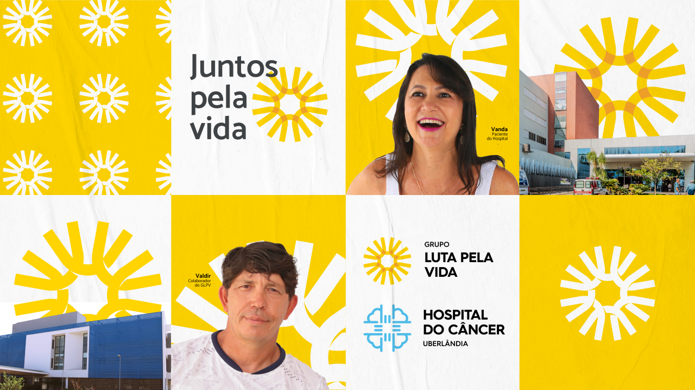

Fundado em 1996, o Grupo Luta Pela Vida (GLPV) é uma instituição filantrópica que apoia pacientes com câncer em Uberlândia e região, oferecendo assistência 100% gratuita e humanizada.
Com o apoio da sociedade,investimos na aquisição de medicamentos, equipamentos, melhorias na estrutura hospitalar e ações sociais, garantindo qualidade no tratamento oncológico. Também promovemos iniciativas educativas voltadas à conscientização e prevenção do câncer.